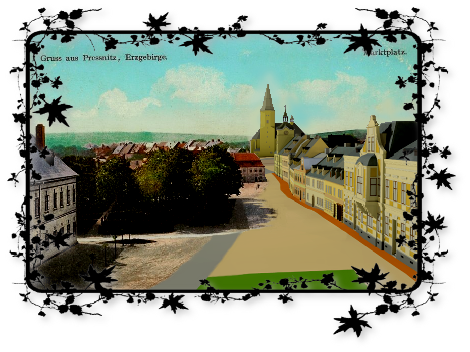

Stránky o znovuzrození městečka ze severu Čech

Pages about the rebirth of a town in the Northern Bohemia
Vítejte na webových stránkách věnovaných rekonstrukci zaniklé obce Přísečnice, vytvořených v rámci projektu Ministerstva kultury Rekonstrukce krajiny a databáze zaniklých obcí v Ústeckém kraji pro zachování kulturního dědictví (NAKI DF12P01OVV043). Welcome to the website devoted to the reconstruction of the former town Pressnitz developed within the project of the Ministry of Culture Czech republic (NAKI DF12P01OVV043). Bienvenue
Rekonstrukce obce spočívá v modelaci jednotlivých domů a terénu pod obcí. Tyto modely jsou pak doplněny informacemi o původní budově, pokud jsou takové informace známy. Zároveň vzniká model středu obce z roku 1972. Povídání o modelech a jednotlivé modely budov jsou k dispozici v záložce Rekonstrukce obce. Stránky jsou doplněny povídáním o poloze a historii obce - záložka O Obci. V záložce O projektu se nachází pár slov o těchto stránkách. Formulář pro zasílání námětů a poznámek naleznete v záložce Kontakt. Reconstruction of the town lies in the modeling of buildings and terrain of the town. These models are then supplemented with information on the original building, where such information is known. At the same time there is a model of the town center from 1972. Description of the models and the models of buildings are available in the tab Reconstruction of the town. Pages are also extended description of the location and history of town - the tab Town. Information about this pages and project is in the tab About. Form for sending topics and notes is in the tab Contact.
Anglická verze je stále ve fázi vývoje. Z tohoto důvodu byly některé textové části zkráceny nebo vynechány. Po jejich překladu budou opět dostupné v plné verzi. The English version is still under development. For this reason some of the paragraphs were shortened or omitted. They will be fully available when translated.
Chtěla bych Vás požádat o zapůjčení fotografií a pohlednic zachycující exteriéry a interiéry jednotlivých budov (které však nejsou vystaveny na stránkách Zaniklé obce), dále pak různé mapy a plánky, které by doplnily bílá místa a rozšířily oblast zájmu. I would like to ask you to loan photographs and postcards depicting the exteriors and interiors of buildings (which are not subject to the website Zaniklé obce). I am also interested in maps and plans that would expand the area interest.
Zájem mám také o místní pověsti, pohádky, pověry, texty písní, životní příběhy, vše, co by pomohlo dokreslit život v Přísečnici. Po získání dostatečného množství materiálu bude vytvořena zvláštní záložka o životě místních lidí. I am also interested in local tales and legends, superstitions, lyrics, life stories, everything that would help describe life in Pressnitz.
V případě zájmu o spolupráci mě kontaktujte přes formulář v záložce Kontakt In case of interest please contact me via the form on the Contact tab.
Děkuji, Ing. Renata Duchnová Thank you, Ing. Renata Duchnová